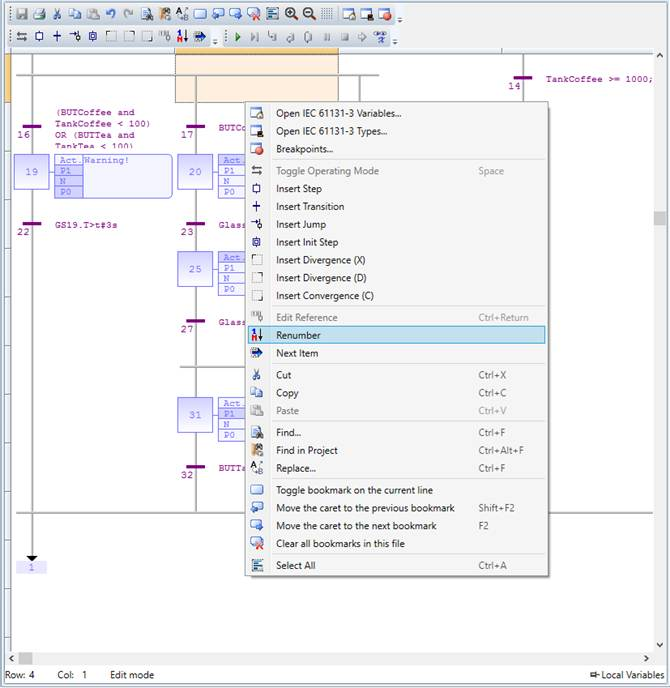
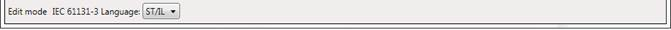

The Sequential Function Chart is a graphical programming language whose main components are:
• Steps with associated actions
• Transitions with associated logic conditions
• Directed links between steps and transitions
SFC steps can be active or inactive. Actions are only executed for active steps. A step can be active for one of two motives: (1) It is an initial step as specified by the programmer (2) It was activated during a scan cycle and not deactivated since
The editor contents can be zoomed in and out via the toolbar buttons or using the shortcut combinations “Ctrl +” for zoom in and “Ctrl -” for zoom out.
The SFC editor context menu has the following functionality:
|
Menu Entry |
Action |
|
Open IEC 61131-3 variables |
Open the IEC variables tool |
|
Open IEC 61131-3 types |
Open the IEC types tool |
|
Breakpoints |
Open breakpoints manager window |
|
Toggle Operating Mode |
Toggle operating mode of selected line |
|
Insert step |
Inserts a new step in the program |
|
Insert transition |
Inserts a new transition element in the program |
|
Insert init step |
Inserts an initialization step |
|
Insert jump |
Inserts a jump element in the program |
|
Renumber |
Renumbers the steps and transitions, starting from the selected one |
|
Next item |
Navigates to the next logical element of the program |
SFC programs are divided into 2 levels:
This level describes the steps and transitions and is edited by the SFC editor.
A step represents a stable state and is drawn as a square box in the chart. At runtime, a step can be either active or inactive. All actions linked to the steps are executed depending on the activity of the step. Initial steps represent the initial condition when the program is started. There must be at least one initial step in each SFC program, denoted with a double line.
Transitions represent a condition the changes the program activity from one step to another. It is marked by a small horizontal line that crosses a link drawn between the two steps. The condition must be a BOOL expression. Transitions define the dynamic behaviour according to the following rules:
A transition in crossed if:
1. Its condition is TRUE
2. All steps linked to the top of the transition (before) are active
When a transition is crossed:
1. All steps linked to the top of the transition (before) are de-activated
2. All steps linked to the bottom of the transition (after) are activated
It is possible to link a step to several transitions and thus create a divergence. The divergence is represented by a horizontal line. Transitions after the divergence represent several possible changes in the situation of the program.
All conditions are considered as exclusive, according to a left to right priority order. It means that a transition is considered as FALSE if at least one of the transitions connected to the same divergence on its left side is TRUE
This is the code for the actions, transitions and text for notes in the level 1 element.
Each level 1 step has 5 level 2 elements, which can be open for editing by double-clicking on the corresponding element.
1. Actions – Simple actions entered as text
2. P1 actions, that can be programmed in ST, LD or FBD, are executed only once when the step becomes active
3. N actions, that can be programmed in ST, LD or FBD, are executed on each cycle while the step is active
4. P0 actions, that can be programmed in ST, LD or FBD, are executed only once when the step becomes inactive
5. Text notes
While a level 2 item is open for editing, the contents of the parent level 1 SFC program is locked for editing. This is done to prevent renumbering or deleting of the parent level 1 element, for which the level 2 editor is open. Once the editing of the level 2 element is complete, and the user closes the child editor, the SFC editor is unlocked, and its normal operation is restored.

When editing a level 2 SFC program, an additional combo box will appear in the status bar of the program editor

From this combo box the language of the level 2 element can be chosen. The default is ST. When the language is changed, a prompt will appear notifying that the current contents of the program will be cleared.